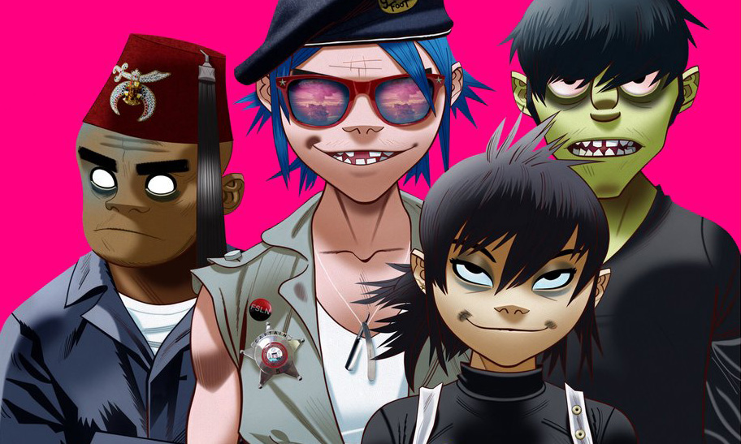

Greg
Geek apprentice
I am just a normal guy trying to be simultaneously a geek and a dad.My favorite bands:
RadioheadSimply the best band They managed to provide both consistent music and amazing intensity peaks. Radiohead's music has greatly evolved, trying to discover new music genres. Cherry on the top: their shows are amazing. |
|
Arcade FireLots of energy, very consistant Very few groups have delivered only great albums. Arcade Fire is one of them. There is no miss. All their albums are a journey. Despite some style differences, they all have a great energy provided by the 6-person band, and amazingly leaded by Win Butler |
|
AirAn amazing journey through electro One of the very first French bands to be worldwide famous. They made electronical music popular with very accessible songs like "Kelly Watch the stars". But the also produced more constructed and more intenses songs like "Don't be light". |
|
|  |
GorillazThe most amazing diversity added to great rock Damon Albarn is a music genius. Whatever the genre, his music is great. Through this fictional band, he mixes rock with different styles (rap, hip hop, electro, etc.) to create a unique type of music. THe albums are full of great featurings and enhanced with artwork and innovation. |
The DearsThe most under estimated band in the world Who knows The Dears? Not enough people. During a decade, they used perfectly the classic ingredients of an indie rock band: a great voice (well two, actually), guitars, keyboards, intensity, solos, etc. Each album is a great set of tracks that follow each other, and that alternates between high-paced rock and slow singing. |